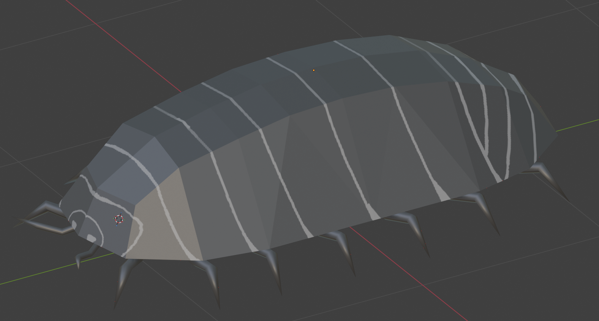
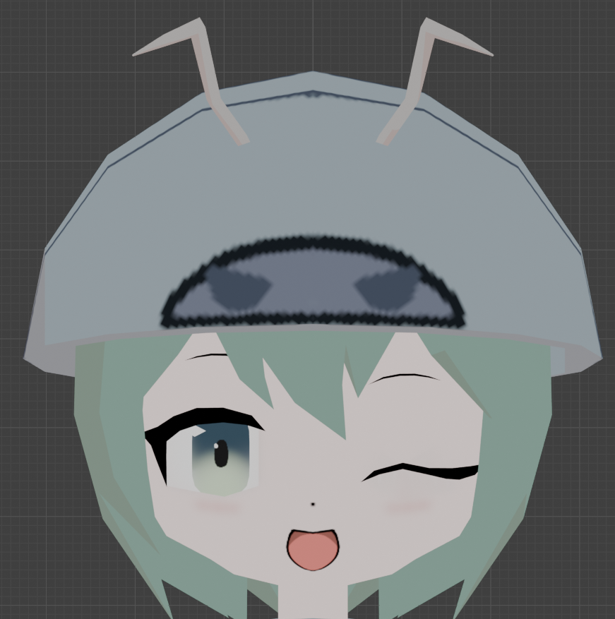

FingerGuider
マウスやカメラに映した人差し指で線を引いて、画面上の3Dダンゴムシとインタラクションできるアプリです。
線が近づくとダンゴムシが逃げ出し、触れると丸まり、線が消えるとまた歩き出します。
ダンゴムシの数は1〜10匹まで調整でき、ダンゴムシ同士がぶつかると互いに避け合います。
カメラを使った指モードでは、人差し指を立てると線が引かれ、
他のジェスチャー（グー・パーなど）に切り替えると線が止まります。
大学の授業の課題として、Seia1004さんと2人で開発しています。
技術スタックはVite + Vanilla JavaScript + Three.js + Canvas 2D APIで、
カメラによるジェスチャー認識にはMediaPipe Tasks Visionを使用しています。
私はアプリの企画・設計と、ダンゴムシの3Dモデル制作を担当しました。

ダンゴムシに加えて、ちびキャラモデルの制作も担当しました。
モデリング・リギング・スキニング・テクスチャ作成・
アニメーション作成・シェイプキー作成まで手がけていて、
ちびキャラは歩行・走り・丸まりのアニメーションや、
シェイプキーによる表情の変化（丸まると困った顔、食事中は笑顔など）にも対応しています。


画面右上のボタンで、いろいろな操作を切り替えられます。
・🖱 マウスモード／☝ 指モードの切り替え
・ダンゴムシの数を1〜10匹で増減
・3Dモデルを「ダンゴムシ」と「ちびキャラ」で切り替え
画面右下の小窓には、カーソルが最後に触れた個体を間近で表示します。
小窓の上でマウスホイールを回すと拡大・縮小でき、
対象の個体にはオレンジ色のリングが表示されます。
餌やりもできます。マウスなら右クリック、
指モードなら✌️ピースのジェスチャーで、指先に餌を1個置けます。
餌を置くと近くのダンゴムシが寄ってきて食べますが、
線で追われているときは餌より逃げを優先します。
このアプリでは、ダンゴムシの「交替性転向反応」を再現しています。
交替性転向反応とは、ダンゴムシが障害物にぶつかって片方へ曲がると、
次は逆方向へ曲がるという、実際のダンゴムシがもつ習性のことです。
このアプリでは「線」を障害物に見立てて再現していて、
ダンゴムシは線に触れるたびに左右交互で線沿いに逃げ、
ジグザグに回り込みながら遠ざかっていきます。
線に接触するとダンゴムシは丸まり、線が消えると伸びてまた歩き出します。
ダンゴムシ同士が近づくとお互いに反発して避け合うので、
数を増やしても自然に散らばって動きます。
タイトル画面からは「虫食いモード」も起動できます。
カメラ映像を全画面に流し、顔検知と写真加工で遊ぶモードです。
まずライブ画面で、カメラに映った人の顔にダンゴムシが群がってきます
（MediaPipeのFaceDetectorで顔を検知しています）。
📷ボタンを押すと群がっていたダンゴムシが消えて静止画をキャプチャし、
今度は顔の上に敷いた「見えない餌」にダンゴムシが集まって、
紙を食べるように顔全体へ穴を空けていきます。
完成は時間ではなく「餌を食べ終えた割合」で判定していて、
食べ終えるとちびキャラがドヤ顔＋ピースで写真に合成されます。
できあがった虫食い写真は透過PNGでダウンロードすることが可能です。
見た目には、セル調のトゥーンシェーダーとピクセル化シェーダーをかけています。
3Dモデルは3段階の階調で塗るトゥーン調にし、
ピクセル化は3D・2D（背景／線／餌／写真／穴）・カメラ映像のすべてに
同じグリッドで適用しているので、合成結果が均一なドット絵になります。
ワールド座標は原寸のままなので、当たり判定や配置はドット化の有無で変わりません。
トゥーンのON/OFFやドットの粗さは設定ファイルの定数ひとつで切り替えられるようにしています。
全体はVite＋Vanilla JavaScript（ES Modules）で組み立てています。
・背景／線／手のスケルトン描画：Canvas 2D API
・3Dモデルの描画・トゥーンシェーダー・ピクセル化：Three.js
・ジェスチャー認識・手のランドマーク検出・顔検知：MediaPipe Tasks Vision
ダンゴムシ1匹1匹はステートマシンとして実装していて、
「歩く／逃げる／丸まる／餌を食べる／顔に誘引される」といった状態を切り替えながら動きます。
餌やちびキャラのサイズ、虫食い穴の大きさなどの調整値は定数にまとめてあり、
数値を変えるだけで挙動を調整できるようにしています。
ここからは中身のプログラムの話です。
このアプリは、画面を2つの層に分けて描いています。
・下の層（Canvas 2D）：背景・線・餌・手のスケルトン
・上の層（WebGL / Three.js）：3Dモデルだけ
透明なWebGLキャンバスを2Dキャンバスの上に重ねることで、
「軽くて自由に描ける2D」と「立体的な3Dモデル」を実現しています。
さらに、ダンゴムシ1匹の「動きの計算」と「見た目の描画」を
きっちり分けているのがこだわりです。
計算する側は座標・角度・状態を出すだけで、絵は一切描きません。
描画する側はその座標を受け取って表示するだけになっているので、
ダンゴムシとちびキャラのモデル切り替えが容易になっています。
ダンゴムシ1匹1匹は、毎フレーム「どっちに進むか」を自分で決めています。
考え方はいくつかの「力」を足し合わせる方式です。
・線から逃げる力（線に対して垂直方向＋沿う方向）
・仲間とぶつからないように反発する力
・餌に近づく力
・（虫食いモードでは）顔に引き寄せられる力
これらを重み付きで合成して、向きを少しずつ滑らかに変えていきます。
大事なのは「優先度」で、線に追われているときは餌も顔も無視して
逃げを最優先にするので、行動が破綻せず自然に見えます。
こだわりの交替性転向反応は、線から離れる方向の力に加えて
「線に沿う方向」の力を足し、その左右を線に触れるたびに反転させることで
再現しています。
虫食いモードで難しかったのは、顔の「中央だけ」食べて
終わってしまわないようにすることでした。
そこで撮影した瞬間に、顔の楕円の内側へ
「見えない餌」を格子状にびっしり敷き詰めています。
ダンゴムシはまだ食べていない餌へ向かい、近くの餌から食べ進むので、
顔全体がまんべんなく虫食いになっていきます。
完成の判定は時間ではなく「餌を食べ終えた割合」で見ていて、
画面からはみ出す餌は置かない（食べに行けず完成が止まるため）など、
細かい抜け漏れも詰めました。
穴の大きさは顔の大小に関係なく一定にしていて、
顔が大きいときは穴の数が増えて覆う、という考え方にしています。
穴あけ自体は描画の合成モードで「くり抜く」ように処理し、
最後は透過PNGとして書き出しています。
大学の授業の課題として始めたプロジェクトですが、
最初のプロトタイプから少しずつ細部を作り込んで、
ちびキャラへの切り替え、交替性転向反応、餌やり、
そしてカメラを使った虫食いモードまで実装できました。
「カメラで人の顔にダンゴムシが寄ってくると面白いね」という
教授との雑談からふくらんだアイデアを、
実際に動くところまで形にできたのが自分としては嬉しいポイントです。